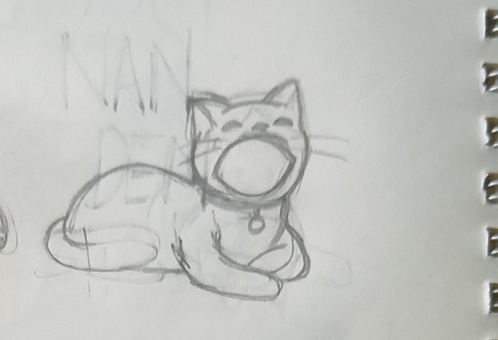
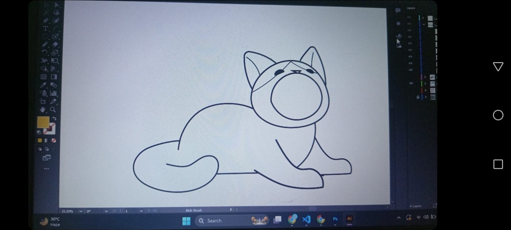
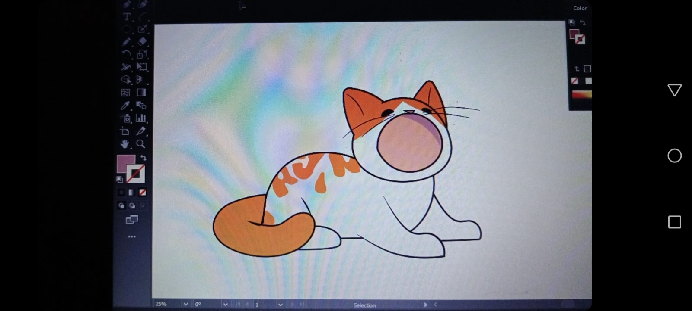
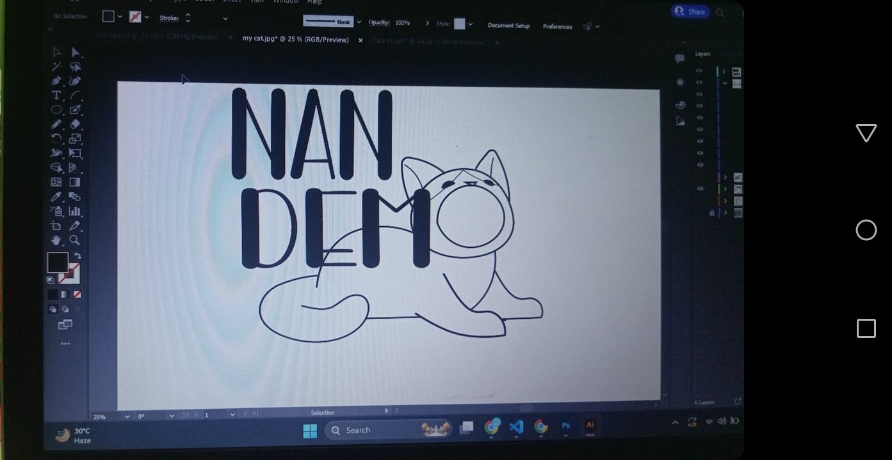
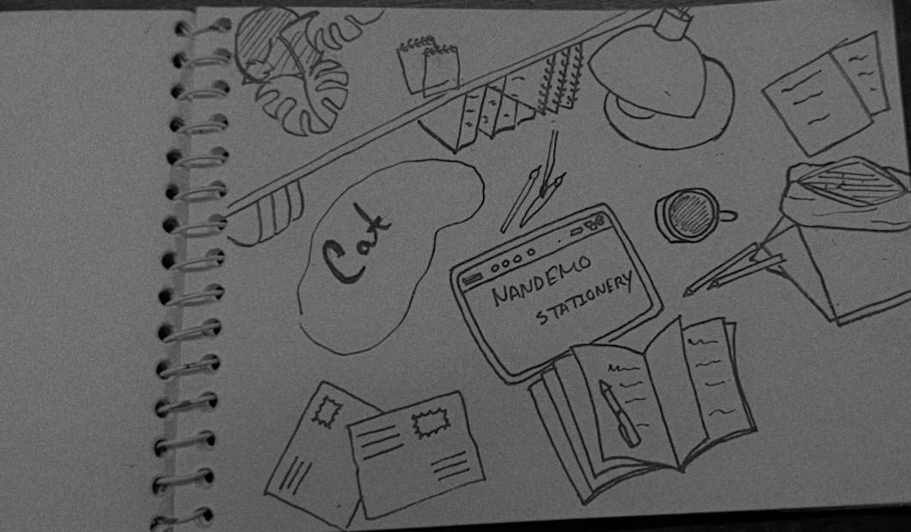

Hi,my name is Sajid ur Rahman
About me
As a passionate graphic designer with a background in visual arts , i thrive on creating compelling visuals that tell a story.My work is inspired by the intersection of creativity and technology.

Through this portfolio , i aim to showcase my diverse range of projects and my commitment to delivering innovative solutions that resonate with client and audiences alike.
My Projects

LOGO
I designed a logo and banner for a startup stationery business. The client requested an orange and
white cat as their mascot, so I created various cat designs in different styles using references until
we landed on the final design you see here.
For the logo colors, I chose orange to convey joyfulness, fun, and warmth, and black to represent
formality and elegance. For the background, I opted for camel color to signify comfort.






.jpg)


BANNER
For the banner, I was asked to include stationery items, the brand name, and the cat mascot on a table. I gave the design a sketchy look and selectively colored only the non-stationery items on the table.
My Practice
LOGO

The logo was designed for a stationery business, featuring a distinctive pen holder on an envelope to symbolize creativity. The handwritten font further emphasizes the brand's artistic spirit. A yellow paint splash adds a vibrant touch, while the name is rendered in dark blue and the motto in brown, all set against a clean white background.
LOGO

This is my personal logo design project, where I merged a cat with the letter 'N' to create a unique and playful representation. The color orange was chosen to further highlight the playfulness and energy of the design.
VECTOR ART

Here, I was learning how to create vector art through a tutorial. I made some modifications and added my personal touch to it.
COVER

For the cover design of my cousin's favorite mystery manhwa, I incorporated a background of vintage newspapers to set a classic and mysterious tone. The main focus of the cover is the protagonist, holding a bloodstained purple hyacinth, symbolizing the dark secrets and suspense of the story. To enhance the vintage aesthetic, I chose a classic font for the title.

Here is my first attempt at creating digital art in Photoshop. I crafted a landscape view of the ocean with a large cat-shaped cloud in the sky and a cat on a boat.
Services
Software
Contact Me
Socials